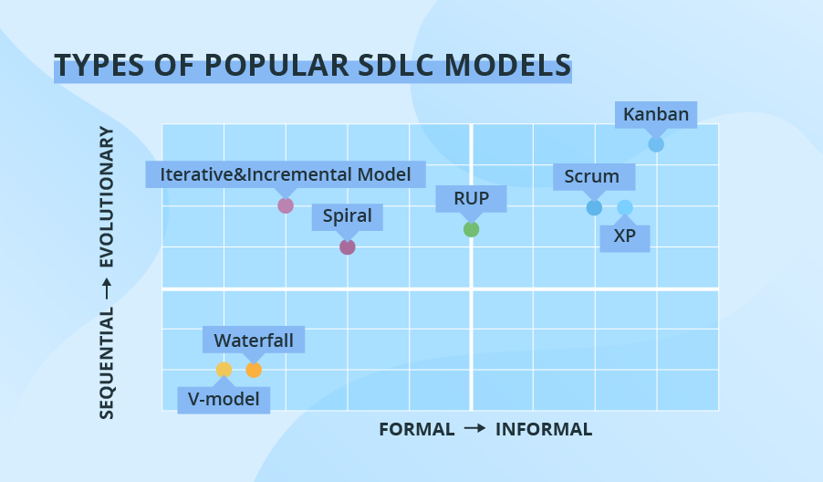

SDLC Models
SDLC models provide different ways for teams to organize and manage the software development process.
Common models include the Waterfall Model, V-Model, Iterative Model, Incremental Model, Spiral Model, and Agile Model, each with its own strengths and weaknesses.
Different models exist because projects vary in requirements, team size, risk, flexibility, and complexity, so teams choose the approach that best fits the project.

Main SDLC Models
There are various SDLC models that provide different approaches to software development, including:
Each model has its own advantages and disadvantages, and the choice of model depends on the project requirements, team size, and other factors.